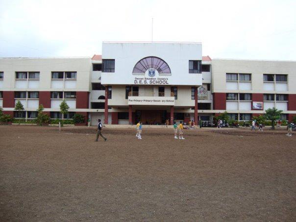

Chinmay Kale
Status : Master's Student at Rochester Institute of Technology
Major : Computer Science
Actively looking for Full time for Spring 2021
-
Rochester Institute of Technology
You can download current Transcript here
From 2018 - Present
I am a Master's student in Computer Science at Rochester Institute of Technology. My primary Cluster is Artificial Intelligence and Big Data. I am in the final semester of my Master's Degree and I will graduate this December 2020.
Current GPA : 3.7
Courses Taken
- CSCI.661 Foundation of Computer Science Theory.
- CSCI.603 Foundation of Intelligence System.
- CSCI.605 Advanced Object Oriented Concepts.
- CSCI.630 Foundation of Intelligence Systems.
- CSCI.620 Introduction to Big Data.
- CSCI.664 Foundation of Computer Algorithms.
- CSCI.720 Big Data Analytics.
- CSCI.724 Web Service and Service Oriented Computing.
- CSCI.737 Pattern Recognition
- ISTE.780 Data Driven Knowledge Discovery
- CSCI.721 Data Cleaning and Preparation
- ISTE.645 Foundation of Web Technologies 1
I am currently doing Capstone Project with Professor Christopher Homan on Label Distribution Learning.
-
Bachelor College : Marathwada Mitra Mandal College of Engineering(MMCOE), Pune
Period : 2012 to 2016
GPA : 3.5
Courses Taken
I pursued Bachelor in Computer Science in MMCOE.
My final year Bachelor's Project was sponsored by Persistent Systems. I got recommendation for that project and got hired by Persistent Systems where I worked as a Software Developer for 2 years.
- 210241 Discrete Structures
- 210242 Data Structures and Problem Solving
- 210243 Digital Electronics and Logic Design
- 210244 Operating System andAdministration
- 210245 Microprocessor and Architecture
- 210247 Object Oriented and Multicore Programming
- 210248 Microprocessor and Interfacing Technology
- 210249 Computer Graphics and Gaming
- 210250 Computer Organization
- 310241 Theory of COmputation
- 310242 Operating System Design
- 310243 Wireless Sensor Networks
- 310244 Data Management
- 310245 Computer Forensics and Cyber Application
- 310249 Distributed Programming
- 310250 Embedded Operating Systems
- 310251 Computer Networks
- 310252 Software Engineering
- 310253 Digital Signal Processing
- 410441 Design and Analysis of Algorithms.
- 410442 Principles of Modern Compiler Design
- 410443 Smart Systems Design and Application
- 410444 Data Mining Techniques
- 410445 Pervasive Computing
- 410450 Software Design Methodology
- 410451 High Performance Computing
- 410452 Web Technology
- 410453 Mobile Applications
-
High School : DES School
Period : 2001 to 2010
The place I would love to visit again. Can't believe its been 10 years since High School.
Here's a picture.
 -
Junior College : PVG's Maharashtra Vidyalaya
From 2010 to 2012
My college for 11th and 12th.